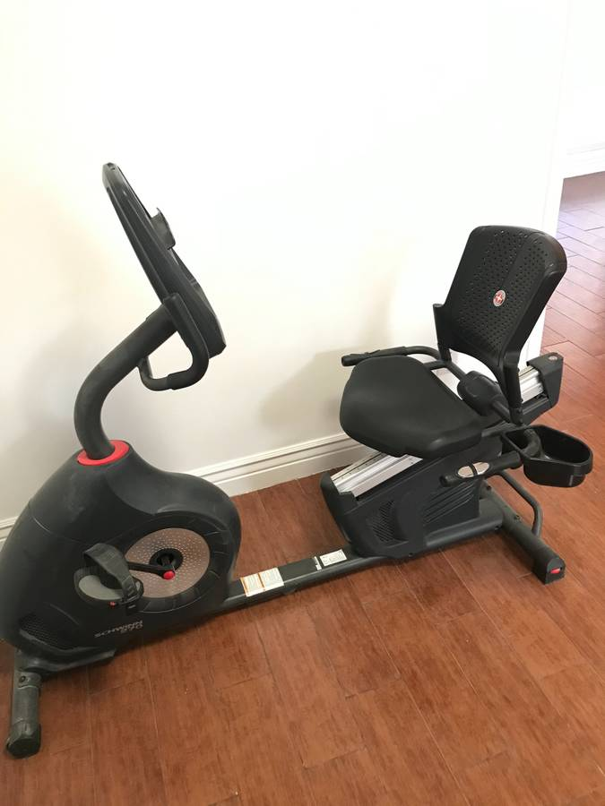

Ignoring unknown labels:
• face : "bold"
• size : "14"
I’m Dr Jonathan Salo, a GI Cancer Surgeon in Charlotte, North Carolina.
If you’re watching this video, you or someone you know may be contemplating cancer surgery.
In this video, you will learn about muscle strength and cancer how exercise can help reduce your complications after surgery.
If you haven’t already seen our video about nutrition and cancer surgery, there is a link in the description below.
The foods we eat provide three things to our bodies:
Patients with GI cancers often start to eat less and can lose weight
Cancer in the esophagus or stomach can make it harder to eat.
Patients with cancer can lose their appetite, which decreases how much they eat
When your intake of carbohydrates decreases, your body looks for a source of energy. There are two placed your body can find additional fuel for energy:
Many of us are happy with the loss of fat in our body when we lose weight, but what many people don’t realize is that when we lose weight, we often lose muscle as well.
Imagine for a moment a log cabin in the mountains. Before winter sets in, you would want to have enough firewood available for fuel during the cold weather

Once winter comes, you would use that firewood as fuel to stay warm

If you get snowed in, you might start running out of fuel.
The same thing happens to your muscle when you lose a lot of weight: If your body can’t get enough energy from the food you eat, it can start to use your muscle as a source of energy. The result can be a loss of muscle. It can be hard to notice, because it happens gradually, but this can cause fatigue and a decrease in energy.
When we see patients in the office, we test their muscle strength. We frequently find that our patients with GI cancers have lost muscle strength.
.pull-left[We can test your muscle strength with a simple gauge called a dynamometer.]
.pull_right[]
About half of our patients have good strength, shown in green. A quarter are have low strength, shown in red Another quarter are in the middle, shown in yellow
Ignoring unknown labels:
• face : "bold"
• size : "14"
The risk of pneumonia after esophagectomy depends upon muscle strength. For patients with good strength, the rate of pneumonia is 5%. But for the group with low strength, the rate of pneumonia is 20%.

The results of our research suggest a simple answer: The risk of pneumonia after surgery is related to a patient’s muscle strength

Now this doesn’t mean that you need to look like this to be able to get through your esophagectomy

The good news is that you can increase your muscle mass before surgery in two very simple ways:
Good nutrition with lots of protein
Exercise
To rebuild muscle, the average man needs to consume 75 grams of protein per day, and women at least 60 grams.
If you haven’t watched our video on Nutrition for Esophageal Cancer Treatment, there will be a link at the end of the video.
When it comes to exercise, we ask our patients to engage in 30 minutes of vigorous exercise 6 days per week in preparation for surgery.
We define vigorous exercise as working hard enough that it’s hard to carry on a conversation while exercising. You should still be able to breath easily, but working just hard enough that talking is difficult.
It’s important to start slow, especially if you haven’t been used to exercising.
Another way to judge your heart rate is to use a heart rate monitor. The following is an approximate range of heart rate during exerise:
| Age | Minimum | Maximum |
|---|---|---|
| 40 | 125 | 150 |
| 50 | 120 | 145 |
| 60 | 112 | 135 |
| 70 | 105 | 127 |
A heart rate monitor doesn’t need to be expensive.
Here are some monitors from either WalMart or Amazon for less than $25:
If you have access to a gym, that would be an excellent option. You’ll be surrounded by other people who are exercising, and that can help you get started.

A stationary exercise bike is a great option. If allows you to exercise consistently despite the weather, and it’s more convenient than going to the gym.
An exercise bike doesn’t need to be expensive. Here are some examples of bikes offered on Craigslist.

Keep in mind that a lot of people buy exercise equipment as part of a New Year’s resolution, but then by February 1st they are collecting dust.
Don’t be afraid to ask friends, family, and neighbors if anyone has a bike you can borrow as part of your cancer treatment.
Another option if you can’t get access to a gym or exercise equipment is walking. Bear in mind that if you want to get the most benefit from walking, it will need to be a brisk.
If you choose to walk for exercise, it will be important to use a heart rate monitor to make sure you can push yourself to walk at a brisk pace. Remember: the goal is to work hard enough that you have difficulty talking while you’re exercising.

If you have heart disease, or high blood pressure, I have one simple message before starting to exercise. Stop, and ask your primary care doctor or cardiologist before starting to exercise. They can help you design an exercise program that will be safe for you.
The good news is that with proper nutrition and exercise, you can increase your muscle strength, and we have good reason to believe this will reduce your risk of complications after surgery.
If you or a family member have had an encounter with preparing for esophageal cancer surgery, I would love to hear about your experience, so please take a minute to leave a comment below. We’re constantly creating new videos, so please subscribe to be notified of new videos when we post them.
Here are some additional videos you may find helpful